The content value chain from David Robinson’s (@drrob) Tweet
Move content out of my computer as fast as possible
Reproducible
Git-based collaboration
Write once, generate:
Code
Paper
PowerPoint
Site/documentation
In the last 20 years, I tried many tools…
LaTeX
Great for PDFs… Ok, Beamer!
Website generation is not great
I even know how to write code!
\usepackage{ifthen}
@for, @while
Word/PPT
Hard to collaborate before O365
Hard to reproduce / auto-generate
Jekyll
Great for sites
Not great for PPT, papers
RMarkdown
Great PDFs
Mostly good presentations
Hugo and blogdown work well
Need to learn R
The content pipeline for .ipynb
About 75% of data scientists use Python through Jupyter notebooks, and one can use pandoc to generate papers and PowerPoint, but it can be complicated.
graph LR
A[.ipynb] --> B(("Pandoc"))
B ----> E[.doc]
B ----> H[.pptx]
B --> C[.md]
B --> D[.tex]
D --> F((Xetex))
C --> I((Hugo))
F --> G[.pdf]
I --> J[.html]
style B fill:#FF6655AA
style F fill:#88ffFF
style I fill:#88ffFF
Quarto for Python, in a nutshell
In Quarto’s .qmd files, you write Markdown and code, just like .ipynb. Add some YAML configuration and Quarto does the intermediate steps. It integrates well with VSCode and Jupyter.
graph LR
Q[.qmd] --> A
subgraph Quarto
A[.ipynb] --> B(("Pandoc"))
B --> C[.md]
B --> D[.tex]
D --> F((Xetex))
C --> I((Hugo))
style B fill:#FF6655AA
style F fill:#88ffFF
style I fill:#88ffFF
end
B ----> E[.doc]
B ----> H[.pptx]
F --> G[.pdf]
I --> J[.html]
But wait, there’s more!
Quarto can easily run pre-scripts and post-scripts. I frequenly use this to pre-process data and to automatically publish output to git repositories.
graph LR
P[Pre-scripts] --> Q
style P fill:#AA99FF
Q[.qmd] --> A
subgraph Quarto
A[.ipynb] --> B(("Pandoc"))
B --> C[.md]
B --> D[.tex]
D --> F((Xetex))
C --> I((Hugo))
style B fill:#FF6655AA
style F fill:#88ffFF
style I fill:#88ffFF
end
B ----> E[.doc]
B ----> H[.pptx]
F --> G[.pdf]
I --> J[.html]
E --> X[Post-scripts]
H --> X
G --> X
J --> X
style X fill:#AA99FF
Using Quarto
The basics
Whether you use Quarto from .qmd, .ipynb, or .Rmd files, you always start with a YAML front-matter file.
The YAML configuration determines what’s the output format of your document. A few popular output options are html, pptx, docx, and pdf.
You can use a single source file to generate multiple output types.
For example, the YAML on the right will generate a PowerPoint file and a Revealjs presentation.
---title:"Using Quarto for everything"format:pptx:reference-doc: templates/template.pptxrevealjs:incremental:falsetheme: skyauthor: Lucas A. Meyerdate: 2022-07-14---
Main content
### Writing the main contentMost writing in Quarto is done in [Markdown].Quarto's Markdown supports everything I'mused to: figures, tables, bibliography, etc.It also supports lots of extra features, likediagrams with `mermaid` and `GraphViz` andeven LaTeX equations: $$E = mc^2$$
To create slides, you create sections with `#`, titles with `##`, and bullets with `-`.Quarto will render your content in slide form.### Content types- You can add several types of content - code (use backticks) - images - diagrams - tables - etc.
To create slides, you create sections with #, titles with ##, and bullets with -.
Content types
You can add several types of content
code (use backticks)
images
diagrams
tables
etc.
Best feature: generate content dynamically
Let’s say you’re presenting a project about population dynamics but you don’t know which world leaders are coming to the conference.
On the presentation day, you learn that Belgium, China, Brazil, India, Japan and Nigeria are attending.
The next slides were generated using the code below:
df_dr = pd.read_csv("data/dr.csv.gz", compression="gzip")df_pop = pd.read_csv("data/pop_brackets.csv.gz", compression="gzip")years = [2000, 2025, 2050, 2075, 2100]regions = ["Belgium", "China", "Brazil", "India", "Japan", "Nigeria"]for name in regions: display(Markdown(f"## Age and Population Pyramids for {name}")) display(Markdown(f'<div class="columns">')) display(Markdown(f'<div class="column">')) plot_dependency_ratio(df_dr[df_dr.Location == name]) display(Markdown(f'</div>')) display(Markdown(f'<div class="column">')) plot_population_pyramid_series(df_pop[df_pop["Location"]==name], years) display(Markdown(f'</div>')) display(Markdown(f'</div>'))
Age and Population Pyramids for Belgium
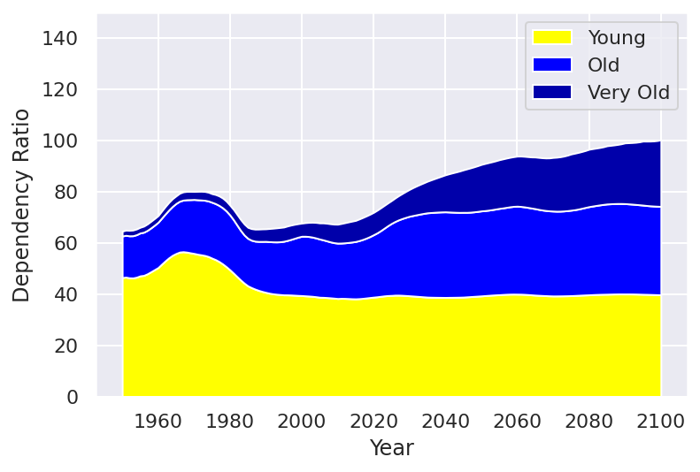
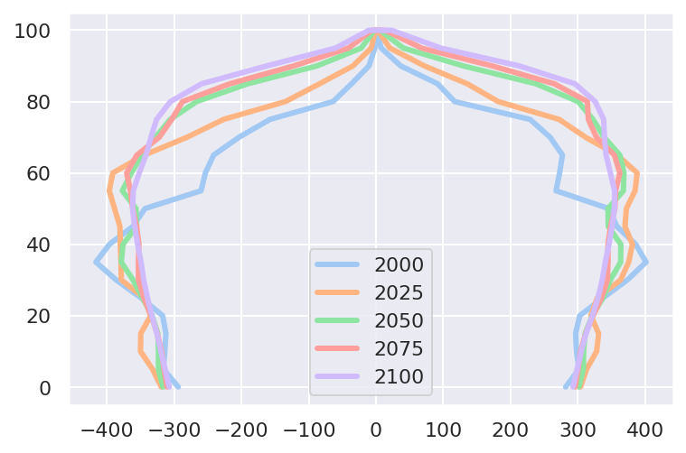
Age and Population Pyramids for China
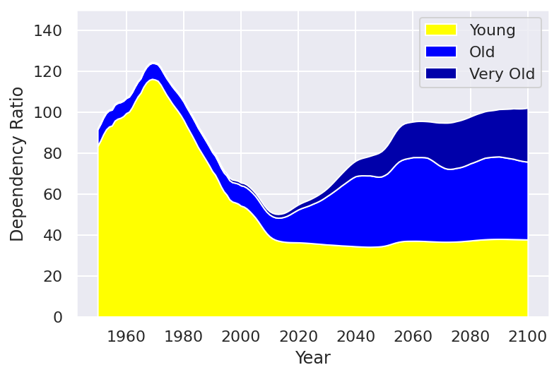
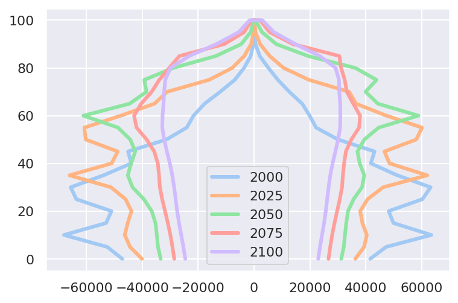
Age and Population Pyramids for Brazil
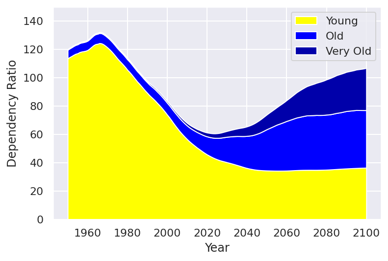
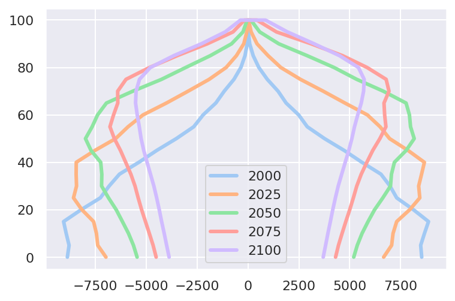
Age and Population Pyramids for India
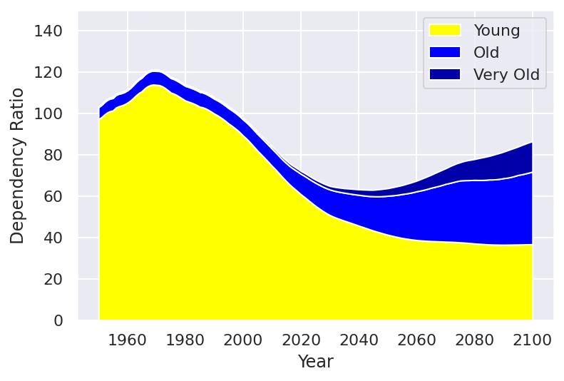
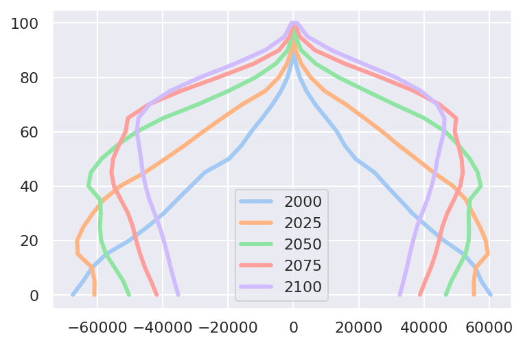
Age and Population Pyramids for Japan
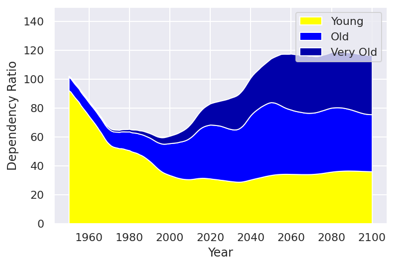
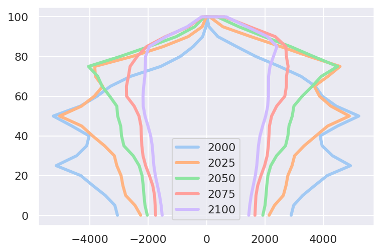
Age and Population Pyramids for Nigeria
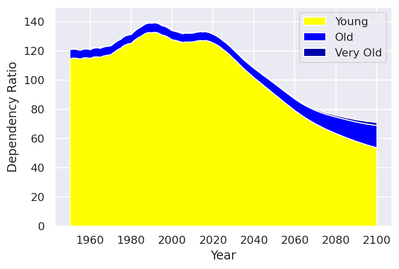
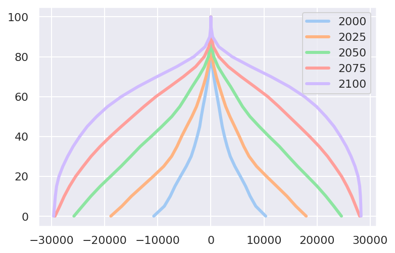
Websites
What I get by just changing the format in YAML
---title:"Using Quarto for everything"format: html # revealjs: # incremental: false # theme: [simple, revealjs-customizations.scss] # title-slide-attributes: # data-background-image: images/data-viz-bg.jpg # data-background-size: contain # data-background-position: rightauthor: Lucas A. Meyerdate: 2022-07-14---
To avoid overwriting the slides, I’m generating a new file for the website.
You can see the result here, and a screenshot in the next slide.